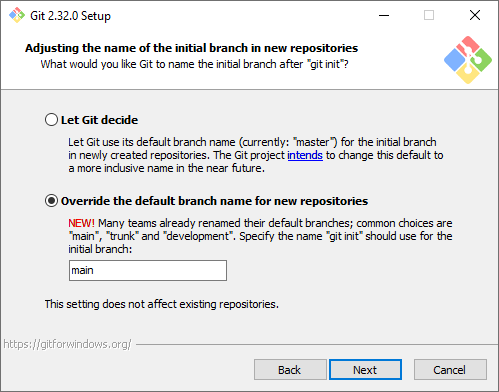
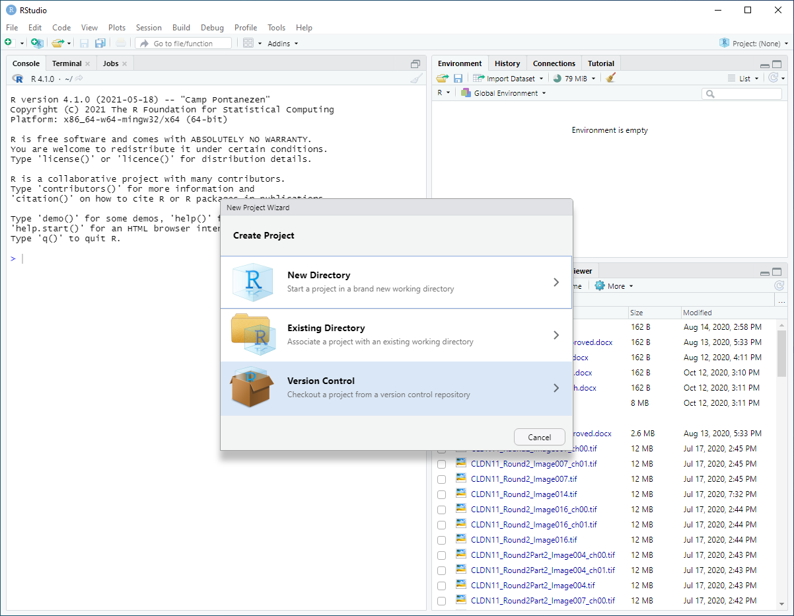
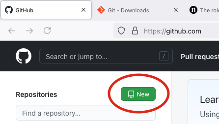

Collaborating using Git/hub and R-Studio
When it comes to coding & data analysis, working with others can be a frustrating proposition. Links to files break when used on different machines, datasets become too large to share, and changes made in the code are impossible to keep straight. Luckily for us, a tool exists to solve (some) of these problems: Git. Git is a version control system. It allows you to take snapshots of your code as it changes over time.
When editing a manuscript in Word, it’s easy to turn on “Track Changes” and save a record of edits, comments, and deletions. Git does the same thing, but for code.
Github is a website that provides an easy way to share changes recorded in Git, allowing collaborators to quickly pull new versions of code using the command line, a GUI, or from within an IDE (e.g., RStudio).
This post is specifically geared towards using Git in combination with R-Studio, but the concepts discussed are broadly relevant.
Terminology
Repository (Repo): A repo is the basic unit of Git. A repo contains all the files associated with a specific project. This could range from the analysis of one dataset to all the code used for an entire publication.
Commit: A Git commit is how you save the current version of the repo. Creating a commit is like hitting the Save button, only with Git, you can easily revert to any previous commit.
Pull: To Pull is to download the latest version of a Git project from a remote repo (e.g., Github)
Push: To Push is to upload your latest version of a Git project to a remote repo (e.g., Github)
Download and Setup
To get started using Git, first download the installer. The default install location is within your user profile, which means you won’t need admin rights to run the installer. So no need to call the IT department to get up and running. Once you’ve got the installer running, there’s only one change I would recommend. While the default options are generally fine, there’s been a recent change in naming conventions. The default “branch”, or version, used to be called “master.” However, now “main” is the preferred nomenclature. You will have to manually make the switch while running through the installer (shown below)

Outside of that, the recommended settings are your best bet.
Creating a New Project in R/Studio
Now that git’s installed, we can begin using it within the context of RStudio. Let’s start by creating a new R Project from a Github repo. In RStudio, navigate to the ‘File’ menu and select ‘New Project’. When asked what kind of project you’d like to create, select version control.

Select ‘Git’, then paste the following link into the ‘Repository URL’ field: https://github.com/Alexander-Sol/GithubForBiologists
You should now be looking at a brand-new project! It contains a Readme, an .Rdata file, and a quick tutorial script that describes the Rdata file format and its use cases. Congratulations, you’ve just cloned your first Github repo! Welcome to the club.
Creating a Github Account
While you don’t need a github account to clone someone else’s repo, you’ll need an account if you want to upload code or collaborate on private repos. To sign up for a github account, simply go to https://github.com/signup. Github started as an open source project but was acquired by Microsoft in 2018. So, you know it’s above board.
A Repo of Your Very Own
To start your own version controlled project in R, the standard work flow is as follows:
- Create a new repository on Github
- Create a new version-control project in R linked to the empty repository.
If you have existing R projects that you’d like to upload to Github, you can use RStudio’s official guide, however, linking a new project to an empty repo is the simplest approach. Once you’ve created a brand new project, it’s easy to add scripts, data, and folders, commit your changes, and push the updated project to your remote repo. The remainder of the project will walk you through this process.
Step 1: The Repo
It’s easy to create a new repo on github. Sign in to your account, go to github.com, and click “New Repo”.

Make sure you choose a memorable name for your new repo.
Step 2: Create a new R Project
Now that you’ve created your own project, just follow the steps outlined above Creating a New Project in R/Studio.